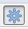
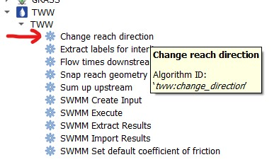
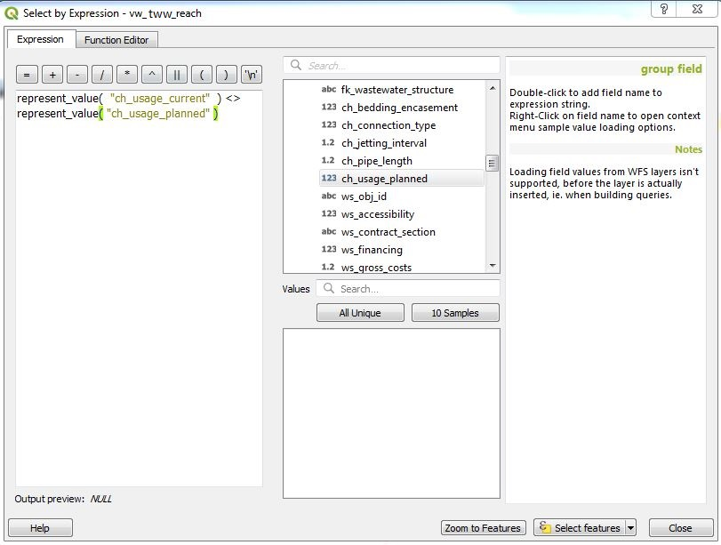

additional fields means, that some fields of the class are in the general tab, others are in separat tabs. The fields of the general tab are not repeated, because Multiedit does not work correct when using a field on more than one tab.
Changing attributes of linear elements (channels)
To change an attribute you first need to select vw_tww_reach
Switch to the edit mode.
Then click on the Identify features button and click the reach you want to edit.
The vw_tww_reach feature attributs window will open.
On the first tab (General) you can change the most common attributes.
To change additional attributes of related tables (e.g. reach points) select the correspondent tab.
The definition in VSA-DSS is, that reaches have to be defined in the flow direction (the start node is where the water comes from, the end node is where the water flows).
TWW has a tool to change the reach direction. With this tool you can change all selected reaches at once.
Do not use the Reverse line button of QGIS, because this button do not change the reach points and their connection to wastewater network elements.
To start you have to select all reaches that you want to change. There is no need to select the vw_tww_reach layer or to set this layer to the edit mode.
Open the Processing Toolbox

Double click the Change reach direction tool

In the tool window you have to choose the vw_tww_reach - Layer and then click on Run
If you zoom in or out, you see, that the slope-arrow and the slope has changed. The reach points level have not changed.
This tool snaps reaches graphically to the wastewater network element they are connected to. So they are not only logically, but also graphically connected.
To start you have to select all reaches that you want to snap. There is no need to select the vw_tww_reach layer or to set this layer to the edit mode.
Open the Processing Toolbox
Double click the Snap reach geometry tool
In the tool window you have to choose the vw_tww_reach - layer and the vw_wastewater_node - layer, then click on Run
If you zoom in or out, you see the changes.
If the result is not what you expect, try with a greater snapping distance
If there are connections from reach to reach, the reach point moves at right angles to the other reach. If there is no way to do a right angle, it moves to the next end point of the reach.
Attention
If there is snapping from reach to reach, you will get not the expected result, if the first reach snaps to a second reach, and afterwards this second reach snaps to a node or a third reach. There will be no more graphical connection between reach 1 and reach 2. You have to re-run the command.
The values of fields with value list are stored in the database with codes.
Note
The codes are unique, also if there is the same text in different value lists. E.g. the code for “surface_wastewater” in the vl_channel_usage_current and in the vl_channel_usage_planned is different.
In a tww project with correct configuration you see in the table view or the form view the values in your language and not the codes.
But if you want to define a selection by expression or if you want to define a rule-based symbology for your layer, you have to know the codes or you use the following expression: represent_value(“field”)
Examples for using represent_value
Search all primary wastewater facility reaches (function_hierarchic starts with pwwf)
Search all reaches, that have not the same usage_planned as usage_current

Note
The expression “ch_usage_current” <> “ch_usage planned” does not work because of the unique codes!
Note
In the demo-project is no use of represent_value for rule-based symbols, because the rules will otherwise only work for one language.
With the Identify feature tool activated, right clicking an element outputs a selection of all existing objects at this place.
You can select then the object you want. This will get you to the correspondent form to see the details.
Adding additional covers and nodes to an existing wastewater structure
If a wastewater structure does not have a cover yet, one can add a cover by filling a co_ attribute in vw_tww_wastewater_structure. The cover is then created at the location of the vw_tww_wastewater_structure.
Note
The following description is for an additional cover. It works similar for additional wastewater nodes.
The TWW project is configured that you can add an additional cover with the Add Point Child Feature button.
select layer vw_tww_wastewater_structure
Switch to the edit mode
click the manhole you want to add a cover with the Identify feature tool
Go to tab covers and click the Add Point Child Feature-button. Now you can digitize a new cover for the wastewater structure.
In some cases, you need to add a wastewater node between two or more reaches, although there is no manhole at this place.
Note
This cases are mainly in pwwf_channels (primary wastewater facilities) if there is e.g. a change of slope or a change of the material or if there is a connection of two channels without manhole (in German: Blindanschluss).
In the data model, you can connect a node between reaches to a channel (because also a channel is a wastewater structure). There is in the moment a discussion, if it is necessary or optional or even forbidden to define a connection to a wastewater structure.
In TWW, there is in the moment no tool, that helps you to connect a wastewater node to a channel. So you just connect the reaches (reach points) to the node.
Note
If you really want to connect the node to a channel, then type the obj_id of the channel manually in the fk_wasterwater_structure field of the node.
There are several QGIS-possibilitys to change multiple records at the same time. QGIS Multiedit changes multiple fields of multiple records at the same, but there is no progress indicator. With QGIS field calculator one field can be change at once and there is a progress indicator.
If there are lot of records (several hundred to several thousand) a multiple record change can take a long time (several minutes), if there are a lot records and if there are views changed, that have lots of fields from different tables.
Special the TWW-main-views (vw_tww_wastewater_structure and vw_tww_reach) have this problem. Therefore, it is always better not to multi-edit these large views, but rather to edit the table in question directly if a large number of data records are to be changed at the same time. That’s why it is good to know, in which table is our field (perhaps the fieldname-prefix helps) and you may need to add this table to your TWW-project.
To explain, that it really matters, there was the following test:
Change for 500 reaches out of 10’122 the field rv_construction_type. It’s a field with a value list. In vw_tww_reach, the fields name is ws_rv_construction_type, means the table of the field is wastewater_structure (ws).
How long did we wait:
Use field calculator with vw_tww_reach: more than 25 minutes!
Use multiedit with vw_tww_reach: more than 5 minutes.
Use field calculator with vw_channel: 1 minute 3seconds
Use field calculator with table wastewater_structure: 5 seconds
Why is vw_tww_reach so slow: there are triggers in the database, that updates for every record the calculated fields of the connected manholes and nodes, that this themes symbology is always up-to-date. With: SELECTtww_sys.disable_symbology_triggers(); these triggers can be stopped. If the triggers are stopped then also the main-views are fast:
Use field calculator or multiedit with vw_tww_reach: about 8 seconds.
Do not forget the enable the symbology triggers again after the calculations: SELECTtww_sys.enable_symbology_triggers();
(and to run the symbology_triggers manually for all records if necessary with the new xy-button?!).
In the vw_tww_wastewater_structure form, you can change the subclass of the wastewater structure (e.g. from manhole to special structure or to infiltration installation) with the field ws_type. The old subclass-record will be deleted and you must enter those attributes, that are subclass specific. But all connections (they are defined to the class wastewater_structure and not to the subclass) or the obj_id or the identifier will not change.
Note
There are just four subclasses supported in the moment: manhole, special_structure, infiltration_installation, discharge_point. Other subclasses (wwtp_structure, small_treatment_plant, drainless_toilett) will be supported in a next release of TWW.
Note
You can not change a point - wastewater structure (e.g. manhole) to a line wastewater structure (channel) or vice versa.
This is a quite complex function. In the actual version of TWW there is just a simple solution with the standard QGIS-tool Split Features implemented. To use this tool is in the moment the best solution, but there are manual additions necessary.
The result when spliting a reach are two reaches and two channels with duplication of all fields exept the reach_point.level(s) and the reach_point.fk_wastewater_networkelement(s) and of course the identifier and obj_id (that have to be unique).
After spliting a reach, you will have to control the two parts of the “old” reach.
The upper part of the reach will have all old values, so you have to adjust the to_reach_point.level and the to_reach_point.connection(fk_wastewater_networkelement). The upper part also keeps all maintenance events and all connections of other reaches to the splitted reach.
In the lower (new) part of the reach, you will have to adjust both reach_point levels and both reach_point-connections. Control (and add if necessary) the maintenace-events and the connections of other reaches. Change identifiers (reach, channel) if necessary. And add and connect a new wastewater_node between the reaches, if it is a primary channel.
Second solution: Change the existing reach and draw the second reach manually. Control the connections.
There will be later a tool in TWW to split reaches. The user has to decide, if splitting concerns only class reach or also the class channel, if there a new wastewater node shall be added and connected. The tool shall be able to calculate the new reachpoint - levels and should change the existing network-element-connections if necessary.


{kind=link}